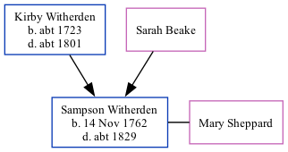

Sampson Witherden 1762 - c1829
[ Home ] | [ Calendar ] | [ Surnames Index ] | [ Family History ]The 3rd of 4 children of Kirby Witherden and Sarah Beake, Sampson Witherden, the first cousin six-times-removed on the father's side of <a href="I1.html">Nigel Horne</a>, was born on Nov 14, 1762 and baptized in St Peters, Thanet, Kent, England on Dec 5, 1762. He married Mary Sheppard there, on Feb 5, 1785.<p>He died <i>c.</i> 1829 (40 years sexton of this parish) and was buried in St Peters on Aug 2, 1829<span class="citation">1</span>.
Parents
- Kirby was born c. 1723
Citations
- Kent, Canterbury Archdeaconry burials 1538-1988 - Findmypast
Media
Kent, Canterbury Archdeaconry baptisms 1538-1912 - GBPRS/CANT/B/96344932
England Births & Baptisms 1538-1975 - R_941835643
Kent, Canterbury Archdeaconry burials 1538-1988 - GBPRS/CANT/D/95091817
East Kent Burial Index - GBPRS/D/407123809/1
England Marriages 1538-1973 - R_847900383
England Marriages 1538-1973 - R_847901076
England Marriages 1538-1973 - R_848291036
Family Tree
Generated by Ged2Site. Last updated on Jul 20, 2025